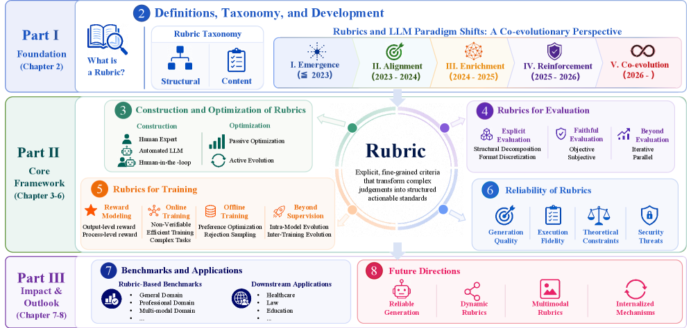
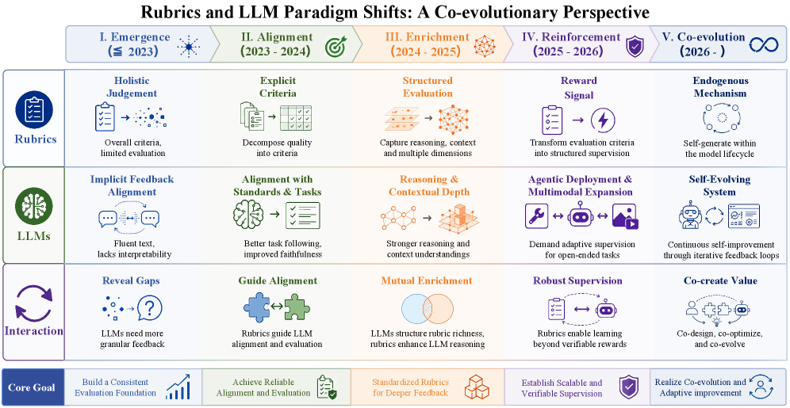
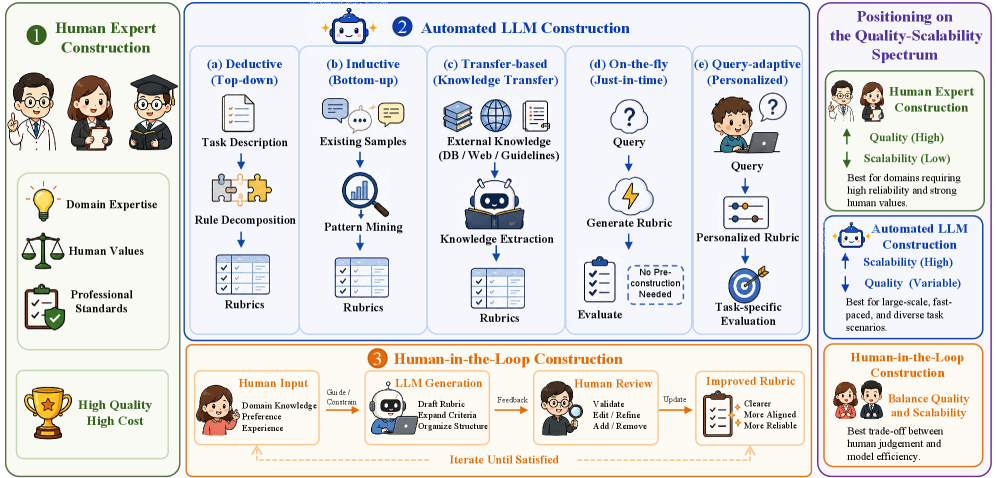
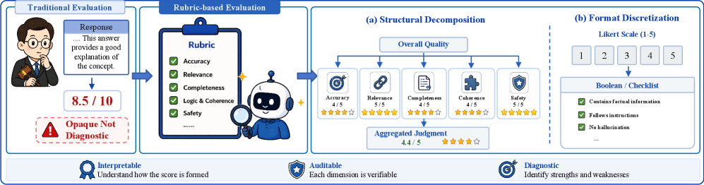
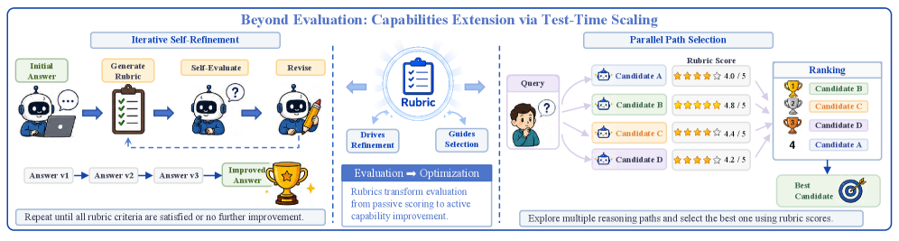
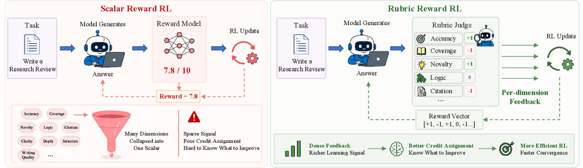
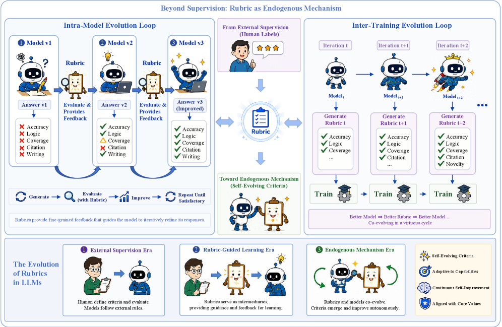

当大模型从「完成特定任务」走向「开放式自主智能体」，我们用什么来评估、监督、引导它？这篇综述提出一个统一答案——Rubric（评分准则）：把模糊的质量判断，拆成显式、可独立验证的标准。
① 评估机制总是滞后于它要监督的模型。标量奖励 / 整体打分（holistic）把多维质量压成一个数字，既不可解释，也无法在「没有标准答案」的开放任务里给出细粒度反馈。
② 评估、强化学习、安全对齐这三条本来独立的研究线，不约而同地收敛到同一个设计：把准则显式化、结构化——这就是 Rubric。它有四个核心属性：显式、结构化、可分解、可验证。
③ 随着 LLM 经历五次范式跃迁，Rubric 也在三个递进层次上加深作用：评估工具 → 稠密训练信号 → 模型自生的内生机制。论文论证：这种反复出现不是巧合，而是结构性必然。
论文最核心的论点：Rubric 不只是一把「尺子」。随着模型能力增强，它在越来越深的层次上参与塑造模型行为。读懂这三层，就读懂了全文的主线。
把整体、主观的判断拆成细粒度、可验证的维度，让评估变得可靠、可解释、可诊断。
作为稠密的训练信号，在标量奖励模型与结果导向方法失效的开放任务里，提供过程级（process-level）指导。
不再是外部强加的约束，而是从模型训练行为中动态涌现，与模型能力协同进化，驱动自我提升。

Rubric 源自教育测量学，本质是把「老师心里的好坏标准」写成一套可复用、可复现的评分细则。迁移到 LLM 语境，评估对象变成了模型生成的文本、代码、推理链，但核心逻辑不变：把隐式意图转成显式、可操作的协议。
这四点把 Rubric 与「整体标量奖励」和「无结构的自然语言反馈」区分开来：
准则用自然语言明确写出，而非藏在打分者脑中。
准则之间有显式的组织关系（层级 / 权重 / 类别）。
拆成相互独立的单元，可分别评判。
每条都设计为可独立、可复现地核验。
纵轴是「评估模型输出的哪个阶段」，横轴是「评分准则的分辨率」。点开下方任意单元格的思路即可对应代表工作（来自论文 Table 1）。
| Holistic 整体 | Analytic 分析式 | Atomic 原子化 | |
|---|---|---|---|
| Output-level 评最终回答 |
单一总分 MT-Bench, AlpacaEval |
分维度打分 G-Eval, PRBench, CDRRM |
二元判定 RBR, TICK, HealthBench, RLCF |
| Process-level 评中间推理 |
逐步整体评 Let's Verify Step by Step, Math-Shepherd |
分维度评步骤 RM-R1, AdaRubric, Critic Rubrics |
原子化评步骤 AutoRubric-R1V, RLCER, CaRR |
粒度从左到右递增：Holistic 给一个总判断 → Analytic 拆成独立打分的维度 → Atomic 把每条压成「是/否」的最小命题（回答 whether 而非 how much）。本文主要聚焦后两者，把 Holistic 视为 Rubric 的「前身」。
结构坐标只描述「形态」，不区分「评判依据」。G-Eval、CDRRM、PRBench 都是 Output × Analytic，但分别锚定在任务指令、模型输出、外部知识。于是论文补充了内容分类：
准则来自任务本身的要求，可直接对当前任务验证。如从指令抽取的约束、质量维度、用户的隐式期待。
从模型已有输出/行为中构建，有效性依赖外部观察。如诊断推理轨迹、从历史失败中提炼、对比候选差异。
锚定在人类预设原则与领域来源，跨任务保持一致。如事实核查、法律法规、金融准则等领域规范。
这是全文的叙事脊柱。模型能力每一次跃迁，都会暴露出旧机制填不上的「对齐鸿沟」，逼着 Rubric 变得更结构化、更自适应、最终内生化。点击下面的阶段，看每一步发生了什么。
早期评估靠整体判断与标量奖励。RLHF 证明人类偏好能引导模型，但标量奖励抓不住质量的多面性；CoT 推理与 GPT-4 这类更强评判者的出现，既暴露了粗粒度评估的局限，也提供了做结构化评估的能力。Rubric 开始从隐式人类标准，变成显式、可解释的准则。
指令模型越来越强，挑战从「生成流畅」转向「可靠对齐」。RLVR 在数学、代码等可验证领域奏效，却暴露了开放任务中「对错难判」的验证鸿沟。Rubric 从评估便利，升级为能把复杂目标拆成可解释标准的「对齐脚手架」，同时服务于测试时扩展与智能体工作流。
推理型 LLM 把评估范围从「最终答案对不对」扩展到推理过程本身。Rubric 演化为能捕捉多个认知维度、并在推理全程给可解释反馈的框架；反过来，更强的推理能力又能生成、精炼更复杂的 Rubric——形成相互强化的循环。同时，对评分偏置的系统研究开始浮现。
自主智能体的出现，把 Rubric 从静态评估者变成动态奖励机制。当结果难以验证，基于 Rubric 的监督成为常规奖励建模的实用替代。它被拆成可验证准则以对抗 reward hacking，并被规模化为可复用的奖励库；多模态基础模型进一步把监督扩展到文本之外。
最新前沿不再由外部设计评估框架，而是让 Rubric 在「生成—评估—优化—部署」的交互中自然涌现。研究转向生成器—评判者的协同进化、动态准则自适应与自治理；同时也揭示了机器自生准则的严重风险（质量退化、自我偏好偏置），凸显可信自监督的必要。

方法部分（Part II）把所有工作组织成四个紧密相连的维度。可以把它读成一条流水线：先把 Rubric 造出来并维护好 → 用它做评估 → 用它做训练 → 再回头审视它到底可不可靠。点击任一卡片跳到对应章节。
把人类意图变成结构化准则，并持续改进质量。
显式拆解 → 忠实执行 → 超越评估驱动推理。
作为稠密奖励，把 RL 拓展到不可验证领域。
生成质量、执行忠实、理论边界、安全威胁。
构建本质是知识外化：把隐式评估标准变成显式、可操作的准则。按「人类参与程度」分三种范式，本质是在质量与可扩展性之间权衡。

解决什么：高风险医疗场景下，整体打分既不可靠也不可审计。怎么做：把评估彻底原子化——每条准则是一个「是/否」的二元命题，由医生手写，覆盖医疗对话的方方面面。意义：它定义了 Rubric 质量的天花板，也成为后续无数工作对比的金标准；但 262 名医生的构建成本本质上无法复制，直接催生了自动化方法。
思路：演绎式构建——把任务描述/元规则通过逻辑推理拆成细粒度准则。TICK 把每条指令拆成 yes/no checklist；RLCF（Checklists are better than reward models）进一步组合「AI 评判」与「程序可验证」两类约束。延伸：RubricHub 引入多模型聚合 + 难度演化，捕捉「好」与「优秀」之间的细微差距；Qworld 把每个问题递归展开成二元准则的层级树。
思路：归纳式——不从任务描述，而从已有样本中提炼准则。对比驱动方向（Auto-Rubric、OpenRubrics、CDRRM、C2、ROPD）分析「被偏好」与「被拒绝」回答的差异，蒸馏出判别性准则；失败反思方向（Sanders、Wan）反其道而行，从历史失败中建「负面错误模式库」；RaR 则直接从参考答案推导多类别准则，外化为 RL 奖励信号。
思路：即时生成（on-the-fly）。CARMO 为每个 query 动态生成上下文感知准则来锚定打分；Think-with-Rubrics 把准则生成内化进推理链——模型先生成任务专属准则，再据此作答，让质量标准成为生成的「先验约束」；CaT 从伪参考答案推导可审计的二元准则。这条路线是后文「内生机制」的雏形。
背景：优化分被动优化（用外部质量信号改进准则，如 OptimSyn、SibylSense、AMARIS 的记忆库机制）与主动进化两类。主动进化把 Rubric 从静态标准重定义为与训练深度耦合的动态机制：EvoLM 让准则生成器与回答生成器共享参数互相强化；Rubric-ARM 在 RL 框架下交替优化两者，理论上比联合更新更稳；RLAC 走对抗路线——评判者专门暴露生成内容的弱点，靠竞争而非协作驱动进步。
传统整体打分有三宗罪：不可解释（一个数字说不清理由）、执行不一致（评判者受非语义线索影响有系统偏置）、静态被动（打完分就结束，不回流到改进）。Rubric 同时治这三病。

结构分解：LLM-RUBRIC 是奠基工作——不追求单一真值分，而是用校准网络聚合每位评分者的逐维度分布，把评分者间的主观性当信号而非噪声。格式离散化：Mallinar 等把多维 Likert 拆成细粒度二元准则并按 query 动态保留最相关子集；SedarEval 区分「答对但被扣分」与「答错但给了部分分」，诊断力超过单纯的二元验证。
客观证据锚定：RULERS 把准则编译成带版本的不可变包，要求每个打分都引用可审计证据；RubricEval 是首个「准则项粒度」的元评估基准，直接检验评判者对单条准则用得对不对。主观偏置抑制：研究揭示了一长串偏置——准则顺序偏置、分数 ID 偏置、自我偏好偏置（评判者偏爱自家模型，错答标「满意」的比例高达 50%）、上下文准则漂移。FairJudge 用 SFT→DPO→GRPO 的课程逐一对抗。
评估信号被接进生成回路，驱动两种推理时改进：迭代自我精修（TICK 用 yes/no checklist 驱动迭代；Think-with-Rubrics 把准则生成放进推理上下文；DeepVerifier 从历史失败轨迹归纳准则，用「分解—验证—判断」三智能体精修深度研究输出）；并行路径选择（利用「验证比重新生成更便宜」的不对称——为候选打分选最优，如 Ctx2Skill、RubricRefine 在工具调用前做合规检查）。详见下图。

这是 Rubric「三层影响」中的监督层，也是论文篇幅最重的一章。标量奖励模型有三宗罪：信息稀疏（多维压成一个数）、表达受限（抓不住开放任务的多约束）、易被 hack。Rubric 同时治这三病。
另一条线（Zhang et al.）证明：奖励过优化恰恰源于高奖励尾部——标量模型分不清「优秀」与「仅仅是好」，导致策略去拟合分布伪影而非真实质量。而 OpenRubrics / CDRRM 给出正面论证：传统 RLHF 学的是一个排序（不透明、脆弱），而 Rubric 训练学的是排序背后的评判依据（可解释、可组合）。

从整体到分解：RaR 把准则分成 mandatory/important/bonus/penalty 并加权；RLCF 把每条指令拆成「AI 评判 + 程序可验证」的 checklist；RBR 把安全行为表示为细粒度可组合命题，大幅减少过度拒答。从独立打分到成对比较：Jia 等让准则以两个候选的语义差异为条件。从表面到因果锚定：CROME 把准则当因果干预变量；Rubicon 用万级准则库 + 否决机制 + 防御准则在规模上对抗 hacking。
output 奖励管不了「答案怎么来的」——逻辑错误却答对会拿到同样的奖励。RM-R1（Chain-of-Rubrics）先按任务类型生成实例专属准则再逐条评判，把不透明的标量打分变成结构化推理。SRaR把每条准则映射到负责满足它的具体步骤，揭示 response-level 奖励会双向错配信用。RTT训练 token 级相关性判别器，把回答级分数细化到 token。Critic Rubrics / SWE-TRACE把长程智能体轨迹拆成可观测的行为检查点，把稀疏的成败转成稠密的轨迹级奖励。
互补可验证奖励：Yuan 等用准则显式惩罚数学推理中的「虚假推理步骤」。拓展到不可验证域：RaR（有参考答案但二元对错抓不全质量）、RLCF（连参考都没有，从任务描述抽 checklist）、Writing-Zero（创意写作）、QuRL（从网络资源挖 case-wise 准则）。训练动态：RGR-GRPO 让准则兼任奖励与离线引导；RuscaRL 在探索时把准则注入指令、再随训练衰减，让模型内化标准；并用细粒度信号缓解奖励稀疏、用专用验证器/负面规则对抗 reward hacking。
偏好优化：rDPO 显示基于准则的过滤显著提分，而基于结果的过滤反而拉低基线——决定性的是过滤机制不是数据量；CPT 用准则当条件合成不同满足度的偏好对。拒绝采样：用编码了期望行为模式的准则给轨迹打分选样本，优于纯终局分数；ROPD 通过对比师生输出诱导 prompt 专属准则，实现与闭源模型完全兼容的黑盒蒸馏，证明显式准则信号承载的信息不亚于隐式 logits。
模型内进化环（按耦合程度）：合作式（EvoLM——生成器与评判者共享参数，改一个就改另一个）、协调式（Rubric-ARM——独立参数、共享目标、交替更新降低梯度方差）、竞争式（RLAC——评判者专找弱点，对抗驱动）。训练间进化环：短期（OnlineRubrics 在每步用当前/参考策略的成对比较动态构造准则；CaT、DR Tulu、课程式 InfiMed-ORBIT）、长期（AMARIS 维护跨整个训练史的持久记忆库；SibylSense 动态替换饱和准则并对抗更新策略）。核心动机：静态准则会随训练饱和、退化成噪声。

「Rubric 一定比整体打分可靠」这个假设本身需要被审视。论文指出可靠性不是单一属性，而是分布在四个相互独立、层层加深的维度上——任何一个没处理好，整体就不可信。
LLM 自生准则有系统性认知错位，且其危害可能超过「不用准则」。用人写准则替换模型生成的，可让判断准确率平均提升 27%；劣质准则甚至把 GPT-4o 在 JudgeBench 上从 55.6% 拉到 42.9%——低于无准则基线 13 个百分点。
偏置来自两个相互正交的源头——评判者的内在行为（自我偏好、上下文漂移）与打分提示的结构（顺序/ID/参考分偏置）。没有单一策略能同时治两者。更糟的是，Rubric 的多维结构会放大偏置：定义了关注什么，也就「授权」忽略其余。
这一层不是工程缺陷，而是范式固有：跨任务失败定理（固定准则必然在某些真实奖励上零相关）、高奖励判别瓶颈（在「优秀 vs 仅好」处失去分辨率）、维度与真实目标错位、以及模型能力前提（弱模型对准则只是表面响应）。
RIPD 证明：对准则做看似自然的细微改动，能诱导定向偏好漂移，目标域准确率最多降 27.9%，却在聚合基准上几乎不可见。更可怕的是不可逆性——被污染的准则一旦进入后训练管线，偏置会固化进模型参数，换回干净准则也无法挽回。
论文盘点了 19 个代表性基准（5 类）与六大应用领域。三条横向观察很有意思：① 专业领域是唯一全部采用专家构建的类别（领域知识不可替代）；② Holistic 粒度几乎绝迹，社区已收敛到 Analytic 与 Atomic；③ 行为锚定（Behavior-Grounded）内容仍被系统性低估，尚未规模化。
| 类别 | 基准 | 规模 | 构建方式 | 粒度 | 内容锚定 |
|---|---|---|---|---|---|
| General | SedarEval | 1,000 | HIL | Analytic | Task |
| General | RubricBench | 1,147 | Expert | Analytic | Task |
| General | RubricEval | 3,486 | Expert | Atomic | Task |
| Professional | HealthBench | 48,562 | Expert | Atomic | Know. |
| Professional | PRBench | 19,356 | Expert | Analytic | Know. |
| Professional | ProfBench | 7,347 | Expert | Analytic | Know. |
| Professional | ExpertLongBench | 1,050 | Expert | Analytic | Know. |
| Deep Research | ResearchRubrics | 2,593 | Expert | Analytic | Task |
| Deep Research | DRACO | 3,934 | HIL | Analytic | Task |
| Multi-modal | UEval | 10,417 | HIL | Analytic | Task |
| Multi-modal | TechImage-Bench | 44,131 | Auto | Atomic | Know. |
| Academic | PaperBench | 8,316 | Expert | Analytic | Know. |
| Academic | PresentBench | 12,900 | Expert | Atomic | Task |
构建方式：Expert = 无 LLM 协助的领域专家；Auto = 全自动 LLM 生成；HIL = 人在回路。完整 19 个基准见原文 Table 2。
质量与可扩展的张力最尖锐。HealthBench 立天花板，Health-SCORE 用蒸馏建可复用准则库；精修后的 LLM 准则可达专家级一致性，成本仅千分之一。
要求推理过程可审计。LEGIT 把法院判决转成层级化「法律争点树」，每个节点是有法律权威背书的可验证准则。
目标不是排序而是促进学习。iRULER 提供 Why / Why-Not / How-To 的逐条反馈；已在千人规模的真实大学课堂验证可行。
FIRE 双轨设计：1,000 道封闭题自动评 + 2,000 道开放题配 query 专属准则。模型擅长指令遵循，但在尽职调查、领域推理上仍远不足（顶分仅 0.39）。
招聘、新闻可信度等高吞吐决策。SCRuB 在无唯一答案时，用五维批判性思维准则 + 多学科视角衡量推理深度，替代准确率。
PaperBench 把论文复现拆成 8,316 个可部分给分项，并被纳入三大 AI 安全框架——Rubric 评估已成 AI 治理的基础设施。
生成依赖模型自身的价值判断作锚，而这个锚恰恰是需要被校准的——自指循环无法从系统内部解决。需要独立于生成模型的质量参照（一个元评估问题）。
固定准则有理论天花板（会饱和、退化为噪声）；动态生成又让跨模型/跨检查点比较失去意义。出路或在「分层设计」：抽象核心维度保持稳定，实例级细则随训练动态调整。
核心难题是划出「模态无关」与「模态特有」准则的原则性边界。视频的时序连贯、语音的韵律，反映的是不同认知官能，强行统一会失真。或需借力认知科学。
当前 Rubric 仍在模型之外，意味着「有条件的对齐」。真正内化的模型会自发应用标准、在输出前自查。路径有二：大规模准则条件训练的隐式内化，或显式的元认知架构设计。
论文的终极猜想：从「整体评估到结构化准则」的范式迁移仍在进行中，其终点可能是——Rubric 不再作为独立物件可见，而成为模型理解和监控自身输出的方式本身。